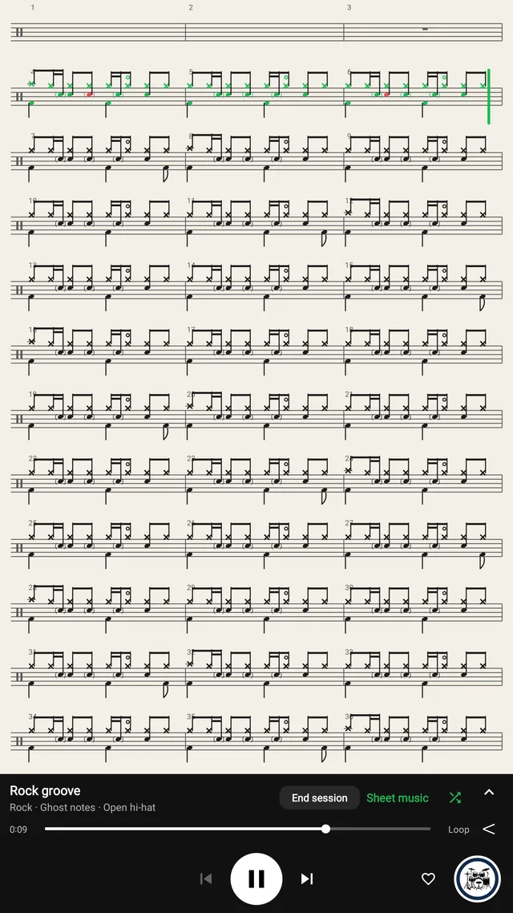

How to read drum sheet music
Drum notation looks scary, but it's simpler than most sheet music: there are no pitches to learn, only which drum and when. Learn the drum key and how to count, and you can read almost any beat.
1. Which line is which drum
Drum music uses the same five-line staff as other music, with a "percussion clef" (two thick vertical bars) at the start. Each drum has its own line or space. Drums are written as round note heads, cymbals as x:
- Kick: the bottom space. Snare: the third space from the bottom.
- Hi-hat: an x just above the staff. Ride: an x on the top line. Crash: an x on a short extra line above the staff.
- Toms go from high to low: high tom near the top, floor tom below the snare.
- Hi-hat foot (the pedal): an x below the staff.
- An open hi-hat has a small circle (o) above it; a plus (+) means closed.
Usually the hands are written with stems up, and the feet with stems down, so you can read them as two "voices".
2. Note values: how long each note is
| Note | Looks like | In one 4/4 bar | Count |
|---|---|---|---|
| Whole note | Open head, no stem | 1 | 1 (2 3 4) |
| Half note | Open head with stem | 2 | 1 (2) 3 (4) |
| Quarter note | Filled head with stem | 4 | 1 2 3 4 |
| Eighth note | One flag, or one beam | 8 | 1 & 2 & 3 & 4 & |
| Sixteenth note | Two flags, or two beams | 16 | 1 e & a 2 e & a … |
| Triplet | A small 3 over a group | three in the space of two | 1 trip let 2 trip let … |
On drums the length of a note barely matters (a hit is a hit). What matters is where it starts.
3. Counting 1 e & a
Split each beat into four and say it out loud: 1 e & a, 2 e & a, 3 e & a, 4 e & a. Every sixteenth note now has a name. "The kick is on the & of 2" or "the snare is on the a of 4" tells a drummer exactly where the hit goes. Counting out loud while you read is the trick that makes it click.
4. Rests, accents and other marks
- Rests are silences. Each note value has a matching rest. You still count through them.
- Accent (> above a note): hit it harder.
- Ghost note (note in brackets): a very soft hit, usually on the snare.
- Flam: a tiny grace note just before the main note.
- Repeat signs (two dots by a thick bar line): play that part again. A slash with dots in a bar means "repeat the previous bar".
5. Reading your first beat
The basic rock beat written as text (each column is an eighth note):
On the staff, you'd see eight x's above the top line joined by beams, a note in the third space under beats 2 and 4, and a note in the bottom space under beats 1 and 3. Read it column by column: everything stacked vertically is played at the same time.
6. How to get good at reading
- Learn the key first. Kick, snare and hi-hat cover most beats; add toms and cymbals later.
- Read slowly, a bar at a time. Count out loud, then play it.
- Read a little every day. Five minutes daily beats an hour once a week.
- Read while you play. Following the music while you play it links the picture to the sound.
- Use colour at first, then take it away. Colour-coded drums help you start, plain black notes make you really read.
On HiHatGo! you can switch any song or exercise to real drum sheet music: a page with a moving cursor or one scrolling line, paper-white or dark, with each drum in its colour while you learn. Notes you hit turn green, so you see straight away whether you read it right.
